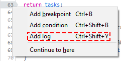
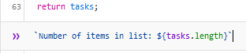
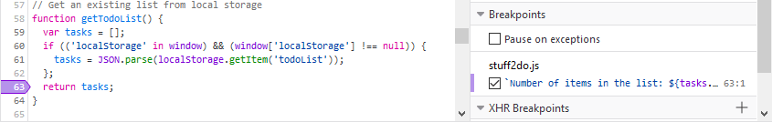
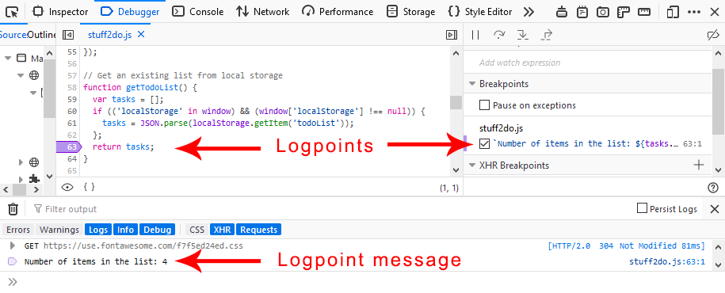

{{ToolsSidebar}}
Sometimes you want to view a value in your code but you don't want to pause execution. Rather than sprinkle console.log() statements throughout your code, you can use a special type of breakpoint, the logpoint. Logpoints print a message to the Console panel instead of pausing code execution.
The logpoint is especially useful in cases where breaking the execution breaks testing procedures, such as when you are debugging popup windows, or executing focus-related logic.
To create a logpoint:


When you set a logpoint, the indicator is purple, rather than the blue of an unconditional breakpoint or the orange of a conditional breakpoint.
You can view the list of logpoints in the Breakpoints side panel.

When execution hits a logpoint, the message you have defined is logged to the console. You can make it easier to see the message by opening a split console under the debugger. (Either press Esc or select the ellipsis menu (...) and then click Show Split Console.)

console.log method.